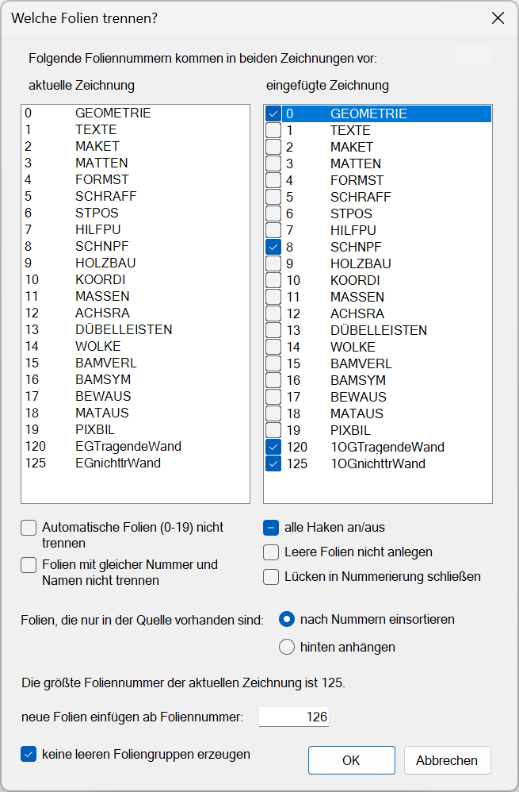
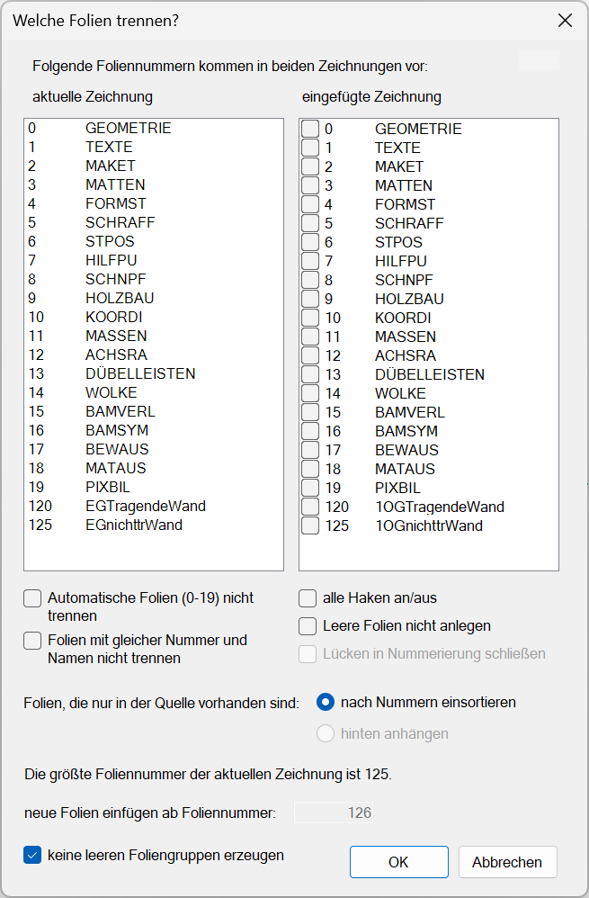
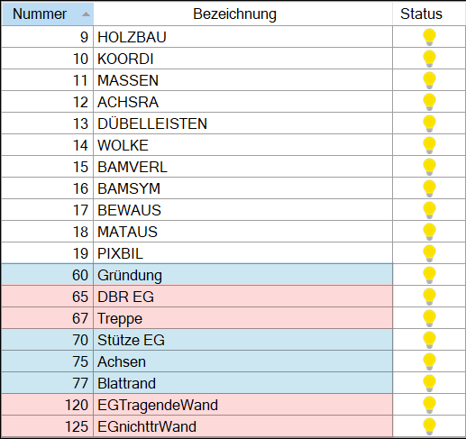
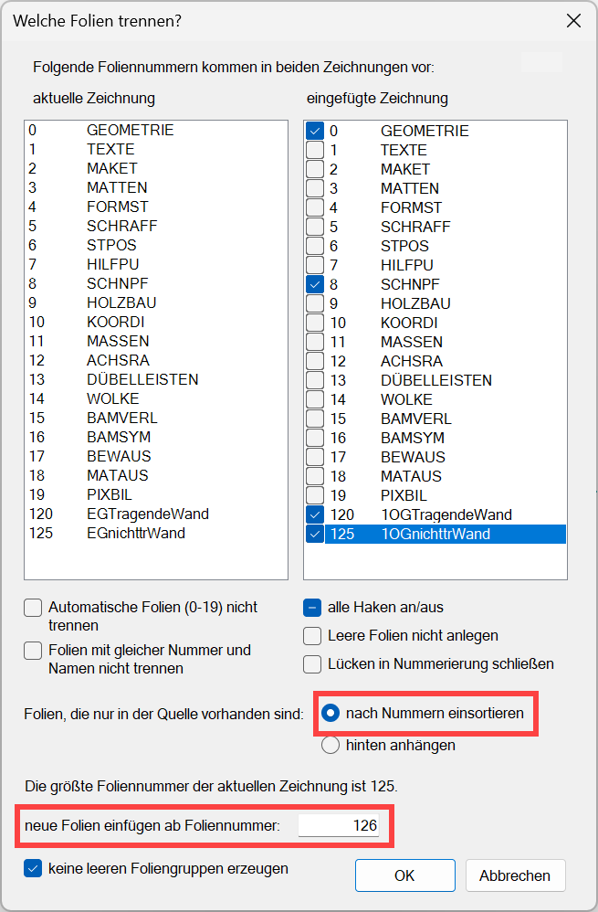
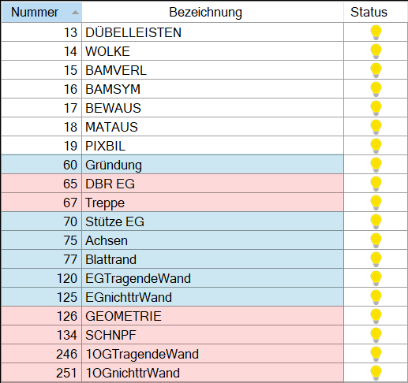
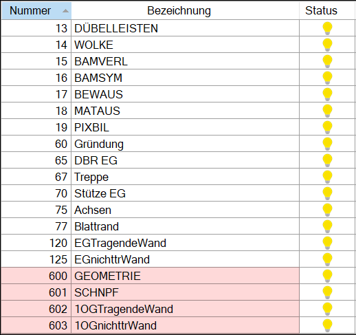
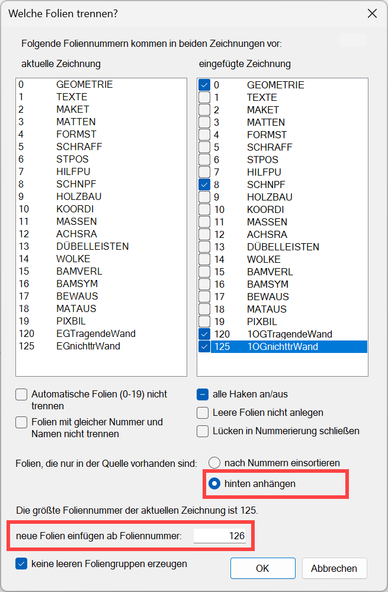
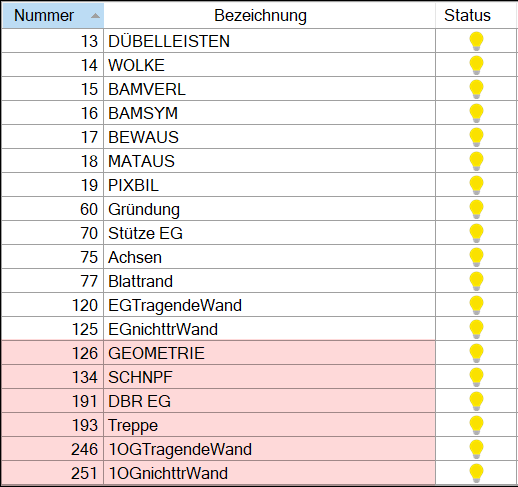

Angaben zur Folienbelegung bei identischen Foliennummern. Die Folien des bestehenden Plans werden nicht geändert!
Die Listen enthalten alle Folien, die in der aktuellen Zeichnung und in der eingefügten Zeichnung identische Foliennummern haben. Foliennummern, die nur in einer Zeichnung vorkommen, werden nicht angezeigt.
Unter eingefügte Zeichnung können Sie die Folien markieren (aktivieren), die nicht zusammengeführt werden sollen. Entscheidend ist hierbei die Foliennummer. Die Foliennamen können verschieden sein.
·In der Liste eingefügte Zeichnung aktivierte Folien (Haken vor der Foliennummer) bekommen beim Einfügen automatisch neue Foliennummern (vgl. Option Neue Folien einfügen ab Foliennummer). Die Folienbezeichnung bleibt dabei erhalten.
·In der Liste eingefügte Zeichnung nicht aktivierte Folien (kein Haken vor der Foliennummer) werden zusammengeführt; die Zeichenelemente aus der eingefügten Zeichnung werden in die Folie gleicher Nummer der aktuellen Zeichnung übertragen (transformiert).
Optionen im Dialog "Welche Folien trennen?"
Beispiel:
Der Positionsplan des Obergeschosses soll auf den Plan des Erdgeschosses gelegt werden. Damit Sie später die Wände des Obergeschosses wieder ausblenden können, müssen diese in einer separaten Folie liegen. Bei den Ursprungsplänen sind die gleichen Foliennummern verwendet worden. Hier haben Sie nun die Möglichkeit, direkt beim Einfügen der Datei die Folien zu trennen.
Die Folien, die nicht in beiden Dateien vorkommen, werden nicht in der Liste aufgeführt! Die Nummern werden aber beim weiteren Vorgehen berücksichtigt.
 |
aktuelle Zeichnung
Liste der in der aktuellen Zeichnung enthaltenen Folien. Gibt es mehr Folien als angezeigt werden können, können Sie am Scrollbalken die Ansicht in der Tabelle nach unten bzw. nach oben schieben. Das Scrollen mit dem Scrollrad ist ebenfalls möglich.
eingefügte Zeichnung
Liste der in der eingefügten Zeichnung enthaltenen Folien.
Aktivierte Folien werden im aktuellen Plan als neue Folien angelegt. Ist eine Folie nicht aktiviert (kein Haken vor der Foliennummer), werden die Zeichenelemente aus dem eingefügten Plan in die Folie des aktuellen Plans transformiert. Der Name der vorhandenen Folie bleibt erhalten.
Optionen
Automatische Folien (0-19) nicht trennen
Die Folien 0 bis 19 sind in jeder Zeichnung vorhanden. Wenn Sie im Wesentlichen nur mit der Folienautomatik gearbeitet haben und zwei Grundrisse übereinanderlegen möchten, können Sie die Elemente der eingefügten Zeichnung von denen der aktuellen Zeichnung trennen, wenn der Haken nicht gesetzt ist. Wenn der Haken gesetzt ist, werden die Folienelemente der Folie 0 GEOMETRIE aus der eingefügten Zeichnung in die Folie 0 GEOMETRIE der aktuellen Zeichnung eingefügt usw.
Folien mit gleicher Nummer und Namen nicht trennen
Folien mit gleicher Nummer und gleichem Namen werden zusammengeführt. Nach dem Aktivieren dieser Option werden diese Folien nicht mehr in der Liste aufgeführt.
alle Haken an/aus
Schnellaktivierung und Aktivierungsstatus für die unter eingefügte Zeichnung aufgeführten Folien.
|
Alle Folien deaktiviert. |
|
Alle Folien aktiviert, gilt auch für die Folien, die durch andere Maßnahmen nicht in der Liste angezeigt werden. |
Mindestens eine Folie ist aktiviert. |


|
Tipp: |
|
Mehrfachaktivierungsselektion ist durch gedrückte Umschalttaste (Shift) und Anklicken der ersten und letzten Checkbox möglich. |

Leere Folien nicht anlegen
Wenn Sie hier den Haken setzen, werden Folien, die keine Elemente enthalten, nicht angelegt. Das erstreckt sich auch auf Folien, die nicht in der Liste aufgeführt sind. Die leeren Folien der aktuellen Zeichnung bleiben erhalten.
Lücken in Nummerierung schließen
Setzen Sie hier einen Haken, wenn Lücken in der Nummerierung geschlossen werden sollen.
Folien, die nur in der Quelle (= eingefügte Zeichnung) vorhanden sind:
nach Nummern sortieren: ·Folien, bei denen ein Haken gesetzt ist, werden getrennt und ab der Foliennummer einsortiert, die unter Neue Folien einfügen ab Foliennummer angegeben ist. ·Folien, bei denen kein Haken gesetzt ist, werden zusammengeführt. Die Folienelemente der eingefügten Zeichnung werden in die Folien der aktuellen Zeichnung mit gleicher Foliennummer übertragen. ·Folien, die nicht in der Liste aufgeführt werden, werden in die Folien gleicher Nummer der aktuellen Zeichnung einsortiert. Für diese Folien gilt die Angabe einer Foliennummer unter Neue Folien einfügen ab Foliennummer nicht. hinten anhängen: Im Unterschied zu nach Nummern sortieren: werden Folien, die nicht in der Liste aufgeführt werden, ab der Foliennummer einsortiert, die unter Neue Folien einfügen ab Foliennummer angegeben ist. Siehe auch: Mögliche Kombinationen (Tabelle) |
Die größte Foliennummer der aktuellen Zeichnung ist (nmax=9899)
Diese Anzeige hilft Ihnen bei der Festlegung der Startnummer für die neuen Foliennummern. Die höchste Foliennummer ist 9899!
Die Startnummer darf nicht kleiner sein als die höchste Foliennummer der aktuell geöffneten Zeichnung, damit keine bestehenden Folien durch neue Elemente verändert werden.
Neue Folien einfügen ab Foliennummer
Geben Sie die erste Nummer für die hinzugefügten Folien an.
Beachten Sie die angezeigte größte Foliennummer. In einer Zeichnung können maximal 9899 Folien enthalten sein. Beim Versuch, weitere Folien hinzuzufügen, werden die darin enthaltenen Elemente in die letzte verfügbare Folie 9899 übertragen. Sie erhalten dann eine entsprechende Meldung. Sie können die Aktion mit Ja ausführen oder mit Nein abbrechen.
Keine leeren Foliengruppen erzeugen
Sind in der eingefügten Zeichnung Foliengruppen angelegt, werden diese in der aktuellen Zeichnung fortbestehen. Sind leere Foliengruppen vorhanden, können sie durch den Haken beim Import ignoriert werden.
OK
Führt die Aktion aus. Falls die höchste Foliennummer (nmax = 9899) überschritten wird, werden Sie durch eine Meldung darauf hingewiesen.
Abbrechen
Das Einfügen der Zeichnung wird abgebrochen.
|
Tipp: |
|
Drucken Sie vorher die Folienliste der beiden Pläne aus, um ggf. im aktuellen Plan Folien umzunummerieren. |
Während der Bearbeitung ist der Folienmanager gesperrt.
Mögliche Kombinationen |
Fall 1: |
Fall 2: |
Fall 3: |
Tabellenspalte "eingefügte Zeichnung": |
|
|
|
Option "nach Nummern sortieren": |
|
|
|
Option "hinten anhängen": |
|
|
|
Fall 1
Alle Folien mit gleicher Nummer werden zusammengeführt. Folien, die nicht in der Liste aufgeführt werden, werden in die Folien der aktuellen Zeichnung einsortiert, und behalten ihre Foliennummer.
|
Tipp: |
|
Dieser Fall entspricht der Funktion Folie beibeh. Die Foliengruppen bleiben erhalten (nicht bei Folie beibeh). Im Gegensatz zu Folie beibeh können Sie durch das Aktivieren der Optionen Leere Folien nicht anlegen und Keine leeren Foliengruppen erzeugen vermeiden, dass nicht gewollte leere Folien bzw. Gruppen entstehen. |
 |
·Elemente der Folie 0 GEOMETRIE werden in die Folie 0 GEOMETRIE transformiert.
·Elemente der Folie 1 TEXTE werden in die Folie 1 TEXTE transformiert usw.
·Elemente der Folien 65 DBR EG und 67 Treppe (nicht in der Liste aufgeführt) werden in die Folien 65 und 67 der aktuellen Zeichnung transformiert. Die Bezeichnung DBR EG und Treppe wird übernommen.
·Elemente der Folie 120 1OGTragendeWand werden in die Folie 120 EGTragendeWand transformiert.
·Elemente der Folie 125 1OGnichttrWand werden in die Folie 125 EGnichttrWand transformiert.
·Die Folien 60 Gründung, 70 Stütze, 75 Achsen und 77 Blattrand (nicht in der Liste aufgeführt) sind in der aktuellen Zeichnung enthalten.
Nach dem Einfügen:  |
: Eingefügte Folien bzw. transformierte Folienelemente. : In der aktuellen Zeichnung enthaltene Folien, die nicht in der Liste aufgeführt wurden. |
Fall 2 (nach Nummern einsortieren)
Die mit einem Haken versehenen Folien werden getrennt. Die Nummerierung erfolgt aufgrund der Angabe der Startnummer unter neue Folien einfügen ab Foliennummer.
 |
·Folien, die nicht in der Liste aufgeführt werden, werden in die Folien gleicher Nummer der aktuellen Zeichnung transformiert. Für diese Folien gilt die Angabe einer Foliennummer unter neue Folien einfügen ab Foliennummer nicht.
·Jede mit einem Haken versehene Folie behält nach dem Einfügen den zahlenmäßigen Abstand zu der vorherigen Folie bei:
-Abstand zwischen der Folie 0 GEOMETRIE und Folie 8 SCHNPF = 8 entspricht der neuen Nummerierung (126 → 134).
-Abstand zwischen der Folie 8 SCHNPF und Folie 120 10TragendeWand = 112 entspricht der neuen Nummerierung (134 → 246) usw.
Nach dem Einfügen:  |
: Die nicht in der Liste aufgeführten Folien 65 und 67 aus der eingefügten Zeichnung werden einsortiert. Die mit einem Haken versehenen Folien werden getrennt und ab der Foliennummer einsortiert, die unter [neue Folien einfügen ab Foliennummer] angegeben ist (im Beispiel = 126). : In der aktuellen Zeichnung enthaltene Folien. |
Wenn Sie bei Lücke in Nummerierung schließen einen Haken setzen und als Startnummer z. B. 600 wählen, erhalten die mit einem Haken versehenen Folien 600er Nummern, und werden fortlaufend nummeriert.
Nach dem Einfügen:  |
Fall 3 (hinten anhängen)
·Die mit einem Haken versehenen Folien werden getrennt und mit neuer Foliennummer in die aktuelle Zeichnung übernommen. Die neu hinzukommenden, auch nicht aufgeführten Folien werden ab der Foliennummer einsortiert, die unter neue Folien einfügen ab Foliennummer angegeben ist (im Beispiel: 126).
·Jede eingefügte Folie behält nach dem Einfügen den zahlenmäßigen Abstand zu der vorherigen Folie bei:
-Abstand zwischen der Folie 0 GEOMETRIE und Folie 8 SCHNPF = 8 entspricht der neuen Nummerierung (126 → 134).
-Abstand zwischen der Folie 8 SCHNPF und Folie 65 DBR EG (nicht in der Liste aufgeführt) = 57 entspricht der neuen Nummerierung (134 → 191) usw.
 |
Nach dem Einfügen:  |
Siehe: